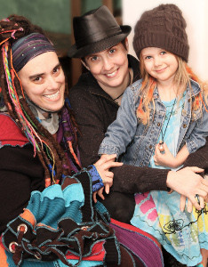
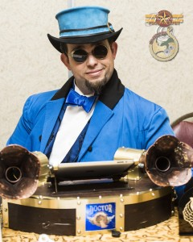
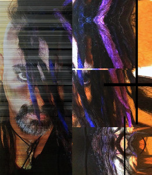

K. Tempest Bradford
K. Tempest Bradford is a speculative fiction writer by night, a media critic and culture columnist by day, and an activist blogger in the interstices. Her fiction has appeared in award-winning magazines the likes of Strange Horizons and Electric Velocipede and best-selling anthologies Diverse Energies, Federations, In the Shadow of the Towers, and many more.
When not writing science fiction and fantasy or engaging in Interstitial arts she contributes articles, essays, blog posts, and reviews to io9, NPR, and various other media outlets. She enjoys commenting on media as much as consuming it and prides herself on being a “harsher of squee” when it comes to television, movies, books, and other entertainment that doesn’t live up to high standards.
She’s active in the SFF fandom community and volunteers for a number of non-profit organizations. In the past she’s served as a juror for the James Tiptree Jr. Award, organized fundraising auctions and salons for the Interstitial Arts Foundation, and raised funds for Clarion West, her writing workshop alma mater. Currently she serves on the board of the Carl Brandon Society, an organization dedicated to increasing racial and ethnic diversity in the production of and audience for speculative fiction, and is programming co-chair for WisCon 39, a feminist science fiction convention.
Tempest belongs to the New York City-based writer’s group Altered Fluid. You can find her blog and every other bit of relevant information about her at KTempestBradford.com.
Twitter: http://twitter.com/tinytempest
G+: https://plus.google.com/u/0/+KTempestBradford/
Instagram: http://instagram.com/ktempestbradford
Roberto Calas
Roberto Calas is an author and lover of history. His newest (soon to be released) fantasy novel, The Madness of Valatriste, features a mad swordsman trying to avenge his master, and accidentally becoming a duke. Sort of.
Roberto also wrote a historical fantasy trilogy (The Scourge) about a 14th century knight fighting his way through a demon-infested England to reunite with the woman he loves. And every bit of it is true except for the made up parts.
In addition to these novels, Roberto has written The Beast of Maug Maurai (fantasy), and Kingdom of Glass (historical fiction in the Foreworld universe).
Roberto lives in Sandy Hook, Connecticut, near his two children, and fights his way through a demon-infested world to see the woman he loves in England. He is represented by Byrd Leavell, of Waxman Leavell. You can learn more on robertocalas.com, or his Facebook.
Wesley Chu
Wesley Chu is an award-winning science fiction author. Born in Taiwan, he immigrated to the United States when he was young and was raised in the fields of Nebraska before settling in Chicago, Illinois. He attended the University of Illinois and received a degree in Information Systems and worked in consulting, insurance and banking industries for many years before he transitioned to writing full time. Chu is also an accomplished martial artist and has acted in film, television, and has worked as a model and stuntman.
Chu has published seven books and is best known for his The Lives of Tao series and the Time Salvager series. In 2015, Chu won the John W. Campbell Best New Writer Award. His debut novel, The Lives of Tao, earned him the Alex Award by the Young Adult Library Services Association and was selected by Goodreads as a Science Fiction Choice Award Finalist. Chu’s Time Salvager has been optioned to be a movie by Paramount.
Milton Davis
Milton Davis is a research and development chemist, speculative fiction writer and owner of MVmedia, LLC, a micro publishing company specializing in Science Fiction, Fantasy and Sword and Soul. MVmedia’s mission is to provide speculative fiction books that represent people of color in a positive manner. Milton is the author of Changa’s Safari Volumes One, Two and Three. His most recent releases are Woman of the Woods and Amber and the Hidden City. He is co-editor of four anthologies; Griots: A Sword and Soul Anthology and Griot: Sisters of the Spear, with Charles R. Saunders; The Ki Khanga Anthology with Balogun Ojetade and the Steamfunk! Anthology, also with Balogun Ojetade. Milton Davis and Balogun Ojetade recently received the Best Screenplay Award for 2014 from the Urban Action Showcase for their African martial arts script, Ngolo. His current projects include The City, a cyberfunk anthology, Dark Universe, a space opera anthology based on a galactic empire ruled by people of African American descent, and From Here to Timbuktu, a steamfunk novel.
{kind=link}
Milton resides in Metro Atlanta with his wife Vickie and his children Brandon and Alana.
Tanya DePass
Tanya DePass is a lifelong Chicagoan who loves everything about gaming, #INeedDiverseGames spawn point, and wants to make it better and more inclusive for everyone. She’s the Founder and EIC of @OutofTokensCast, the Diversity Liaison for GaymerX and often speaks on issues of diversity, feminism, race, intersectionality & other topics at conventions. She streams on Twitch, and can most often be found on twitter, chatting about a mix of topics.
Zetta Elliott
Born in Canada, Zetta Elliott moved to the US in 1994 to pursue her PhD in American Studies at NYU. Her poetry has been published in several anthologies, and her plays have been staged in New York, Chicago, and Cleveland. Her essays have appeared in The Huffington Post, School Library Journal, and Publishers Weekly. She is the author of twenty books for young readers, including the award-winning picture book Bird. Her urban fantasy novel, Ship of Souls, was named a Booklist Top Ten Sci-fi/Fantasy Title for Youth and was a finalist for the Phillis Wheatley Book Award. Her own imprint, Rosetta Press, generates culturally relevant stories that center children who have been marginalized, misrepresented, and/or rendered invisible in traditional children’s literature. Elliott is an advocate for greater diversity and equity in publishing. She currently lives in Brooklyn.
Shira Glassman
Shira Glassman is a bisexual Jewish violinist living in North Central Florida. She is best known for her Mangoverse books, four fluffy queer fantasy novels (and accompanying short stories) set in a tropical Jewish fairytale kingdom ruled over by a young lesbian and her “family of choice”, including a dragon. One of these books, Climbing the Date Palm, was a double finalist in the third annual Bi Book Awards. She writes other short contemporary and fantasy fiction as well, including two contemporary romance novelettes about professional musicians. Shira’s greatest inspirations are French and German opera and Agatha Christie novels, as well as her own family life and closest friends.
Emmy Jackson
Emmy Jackson is a Detroit-based author who is two books into a post-apocalyptic urban fantasy series called Empty Cradle. He has been a freelance automotive writer for fourteen years, a fiction writer for thirty, and has a broad range of experience and expertise with which to contribute to panel discussions.
{kind=link}
Emmy drove a school bus for six years, has an encyclopedic knowledge of cars (useful when dealing with technical issues in post-apoc and steampunk stories), and has some experience in aerial acrobatics, improvisational dance, gaming, travel…lots of random things.
Emmy spent three years living full-time in a motorhome as a nomad and is best pigeonholed as an occasionally cross-dressing post-apocalyptic gothic dieselpunk with distinct steampunk and maker tendencies.
Ariela Kristantina
Ariela is a comic artist from Jakarta, Indonesia. She’s now pursuing her career in comics in America. Ariela was involved in several anthologies before she got her first Marvel book in 2014 as artist for The Logan Legacy 2. Her other works for Marvel include, Wolverines and The X-Men #6, She’s also working for BOOM! Studio with Justin Jordan for Deep State (#1-#8) and for Dark Horse with Brian Wood for Rebels #8. Right now, she’s working on InSexts as the cover and interior artist with Marguerite Bennett as the writer for Aftershock Comics.
{kind=link}
Ken Liu
 Ken Liu (http://kenliu.name) is an author and translator of speculative fiction, as well as a lawyer and programmer. A winner of the Nebula, Hugo, and World Fantasy awards, he has been published in The Magazine of Fantasy & Science Fiction, Asimov’s, Analog, Clarkesworld, Lightspeed, and Strange Horizons, among other places.
Ken Liu (http://kenliu.name) is an author and translator of speculative fiction, as well as a lawyer and programmer. A winner of the Nebula, Hugo, and World Fantasy awards, he has been published in The Magazine of Fantasy & Science Fiction, Asimov’s, Analog, Clarkesworld, Lightspeed, and Strange Horizons, among other places.
Ken’s debut novel, The Grace of Kings (2015), is a Nebula nominee and the first volume in a silkpunk epic fantasy series, The Dandelion Dynasty. He also released a collection of short fiction, The Paper Menagerie and Other Stories (2016). He lives with his family near Boston, Massachusetts.
In addition to his original fiction, Ken is also the translator of numerous literary and genre works from Chinese to English. His translation of The Three-Body Problem, by Liu Cixin, won the Hugo Award for Best Novel in 2015, the first translated novel ever to receive that honor.
MANDEM
MANDEM is a queer family working under a single artist name. With an academic background in mythology, critical theory, and gender/queer studies, MANDEM works across media and materials, intentionally destabilizing genre in terms of content and media. Their art publications include award-winning roleplaying games, CD covers, fantasy novels, board and card games, poetry anthologies, and literary journals. During their 2016 artist residency in Florence, Italy, MANDEM is working on a new painting series “Hypermobility” to raise international awareness for the connective tissue disorder, Ehlers-Danlos Syndrome. www.MANDEMart.com
Seanan McGuire
Seanan McGuire is an American author who writes far more than is probably good for her, and really needs to take a nap (she is not going to take a nap). She has visited Denver twice before, and is a little concerned about the fact that the city has no air, but what the heck, that’s what oxygen masks are for, right?
Seanan’s first book was released in 2009; she has since released over twenty more (see again, “needs a nap”), both under her own name and under the name “Mira Grant.” Her work ranges from urban fantasy and biomedical thrillers to poetry and non-fiction, and she can regularly be found complaining about how slowly she writes. No, seriously.
When not writing, Seanan reads comics, watches too much television, and wanders the world looking for the perfect corn maze. No one is sure what will happen when she finds it.
Doctor Q
Doctor Q is the resident MC and DJ of Speakeasy Electro Swing Atlanta. When not spinning tunes, he is also the Alternate History Track Director at Dragon Con, as well as the Executive Director for the Artifice Club.
The Artifice Club is a non-profit neo-vintage arts coalition dedicated to promoting the appreciation of and participation in all vintage and retro-futurist inspired visual and performing arts. You can find out more about the organization at www.theartificeclub.com.
Ekaterina Sedia
Ekaterina Sedia resides in the Pinelands of New Jersey. Her critically-acclaimed and award-nominated novels, The Secret History of Moscow, The Alchemy of Stone, The House of Discarded Dreams, and Heart of Iron, were published by Prime Books. Her short stories appeared in Analog, Baen’s Universe, Subterranean, and Clarkesworld, as well as numerous anthologies, including Haunted Legends and Magic in the Mirrorstone. She is also the editor of the anthologies Paper Cities (World Fantasy Award winner), Running with the Pack, Bewere the Night, and Bloody Fabulous as well as The Mammoth Book of Gaslit Romance and Wilful Impropriety. Her short-story collection, Moscow But Dreaming, was released by Prime Books in December 2012. She also co-wrote a script for YAMASONG: MARCH OF THE HOLLOWS, a fantasy feature-length puppet film voiced by Nathan Fillion, George Takei, Abigail Breslin, and Whoopi Goldberg to be released in 2016 by Dark Dunes Productions.
Ellie Ann
Stoneburner
Stoneburner is the solo project from Steven Archer that combines tribal fusion electronic dance music with experimental sounds. Steven Archer is a multifaceted musician, artist, and writer. He is best known for his work with the electronic rock band Ego Likeness (Metropolis Records) as well has is abstract electronica project ::Hopeful Machines::. His music has been used in several feature sound tracks including the recent award winning documentary Small Small Thing. He has also been commissioned to score a video for NASA on the upcoming OSIRIS-REx mission.
Stoneburner is his vision of the music and philosophy of Frank Herbert’s “Dune” book series. It fuses traditional organic instruments and vocals from all over the world with modern electronic dance music in an attempt to tap into the books technological-tribal aesthetic. His hope is that the project will do justice to the novel’s vision of Arrakis and it’s warrior inhabitants.
Live shows are intense and fluid, consisting of multimedia video projections and often incorporate tribal fusion belly dance troupes.
He has written and illustrated several books available on Amazon.com as well as freelance art for several publishers including Weird Tales magazine. His artwork and jewelry can be purchased from the Ego Likeness etsy store.
More information can be found on the Ego Likeness website www.egolikeness.com and www.stoneburnerband.com.